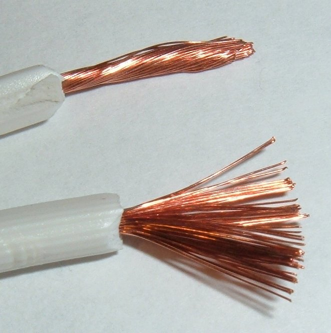
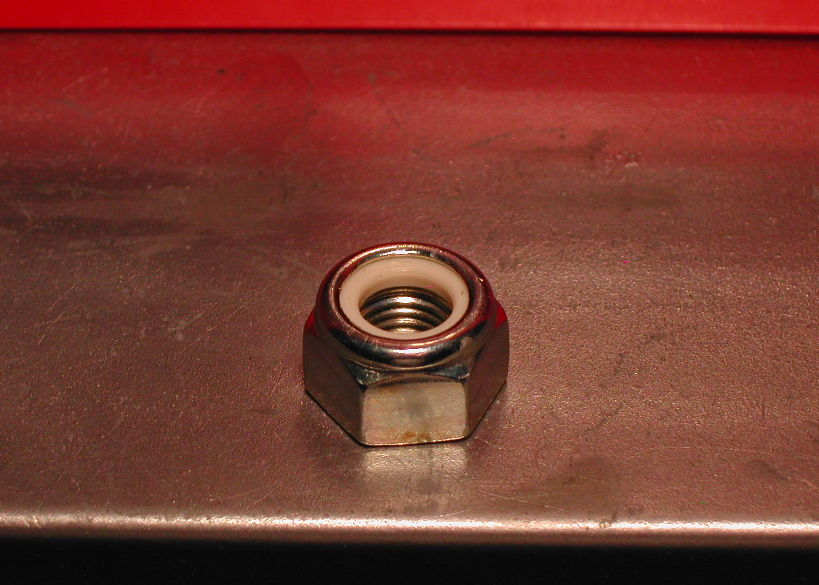
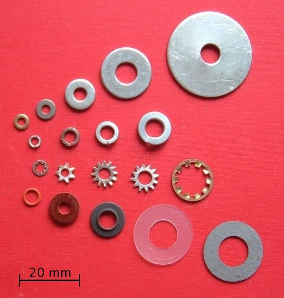
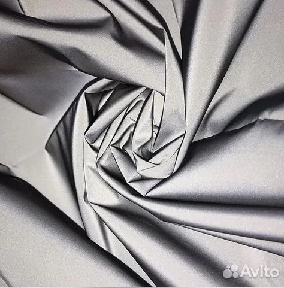
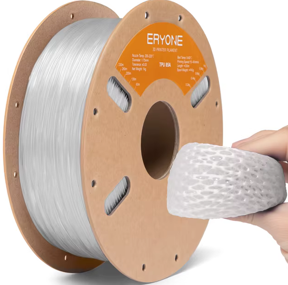

Каталог компонентов и только актуальных чертежей/3D версии v0.7.6. Все непечатные виды имеют стабильные ID-выноски; раскладки печати оставлены чистыми намеренно.
25компонентов
7категорий
19актуальных чертежей
7актуальных 3D-моделей
20видов с ID
25нужно уточнить
ID
Картинка
Возможные названия компонента
Зачем он нужен
Описание или покупка
Управление и датчики
001
ESP32 C3 Mini Plus / SuperMini Plus V2.0Вид платы с обратной стороны
фото продавца
ESP32 C3 Mini Plus / SuperMini Plus V2.0
ESP32 C3 Mini Plus
ESP32-C3 SuperMini Plus
ESP32 C3 Super mini V2.0
красная плата ESP32 C3 Mini Plus
Основной микроконтроллер. Управляет BLE, PWM подсветки, датчиком освещённости и логикой режима дня/ночи.
Датчик освещённости. Нужен для автоматического включения и регулировки яркости по внешнему свету.
Интерфейс
I²C; на плате подписаны VIN, 3Vo, GND, SCL и SDA
Питание модуля
3,3–5 В — заявление продавца
Потребление
около 45 мкА в работе и 0,5 мкА в shutdown — заявления продавца
Размер платы
примерно 16,5 × 16,5 мм по размерной фотографии
Температура
от −25 до +85 °C — заявление продавца
Диапазон
в изображениях продавца указаны противоречивые 0–120 klx и 0–167 klx
Монтаж в v0.7.6
съёмная PETG-опора #petg-10 под световым тоннелем Ø11 × 15 мм; плата крепится двумя M3-закладными, положение чувствительного элемента и отверстий обязательно сверить по реальной плате
Выбранный единый климатический модуль Crucian: AHT20 измеряет температуру и влажность, BMP280 — атмосферное давление и резервную температуру. Оба датчика работают на общей I²C-шине через один четырёхконтактный разъём.
Питание в Crucian
3,3 В от ESP32-C3; это безопасный уровень и для питания, и для подтяжек I²C
Выводы
VDD, SDA, GND, SCL по маркировке присланной фотографии; порядок обязательно сверить перед подключением
Адреса I²C
AHT20 обычно 0x38; BMP280 проверяется прошивкой на 0x76 и 0x77
Рабочее напряжение
продавец указывает 2,0–5 В; AHT20 допускает 2,0–5,5 В, но с ESP32 выбран режим 3,3 В
Габариты
15 × 15 мм — фактический размер, сообщённый владельцем
Монтаж
нижний отдельный карман; чувствительную кромку ориентировать к мембране, без прямого наветренного продува; под самоклеящейся мембраной Ø20 мм с активной центральной зоной Ø10 мм предусмотрены семь отверстий Ø2 мм (одно центральное и шесть по окружности R3,2 мм); кабельный проход выполняется отдельно через potting-well
Двухканальный токосъёмник передаёт питание на вращающуюся подсветку внутри флагштока. Он не является подшипником и не должен воспринимать механическую нагрузку конструкции.
Выбранный вариант
12.5mm 2CH 5A; соответствует обозначению M125-0205
Каналы и ток
2 канала, заявлено 5 А; допустимый длительный ток на канал нужно проверить на стенде
Диаметр корпуса
12,5 мм по обозначению варианта
Провода
заявленная стандартная длина 150 мм
Условия работы
до 250 об/мин, от −30 до +80 °C, IP51 — заявления продавца
Силовой низковольтный ключ коммутирует 12-вольтовую подсветку и принимает PWM-сигнал ESP32-C3. Оптопара отделяет управляющую сторону от силовой при правильном подключении модуля.
Выбранный вариант
LR7843, заявленный предел транзистора 30 В / 161 А; 161 А не является допустимым током готового модуля
Управление
сигнал 3 В или 5 В, высокий уровень включает, низкий выключает, заявлена поддержка PWM
Развязка
оптопара между управляющей и силовой сторонами — заявление продавца
Размер по фото
примерно 32,9 × 16,2 мм
Монтаж
на фото два отверстия и съёмные винтовые клеммники; точный диаметр и расстояние нужно измерить
Понижает стабилизированные 12 В системы до 5 В для питания ESP32-C3 и низковольтной периферии. Для выбранной версии 5 В вход 12 В находится внутри заявленного диапазона 6–28 В.
Выбранный вариант
фиксированный выход 5 В; на схеме продавца ему соответствует R1 = 75,0 кОм
Вход
6–28 В для версии с выходом 5 В
Выходной ток
до 4 А длительно, до 5 А кратковременно при хорошем теплоотводе — заявления продавца
Преобразование
синхронный buck, 500 кГц, заявленный КПД 81–94 %
Ток покоя
300–400 мкА — заявление продавца
Размер и масса
примерно 27,5 × 22 × 9 мм, 5 г
Защиты
UVP, OCP, ограничение тока при коротком замыкании, плавный пуск и отключение при перегреве — заявления продавца
2-pin waterproof connectors with 20 AWG wires — 5 pairs
фото продавца
2-pin waterproof connectors with 20 AWG wires — 5 pairs
водонепроницаемые разъёмы 2 Pin 20 AWG
герметичные двухконтактные разъёмы
2-pin male and female connector
автомобильный влагозащищённый разъём
Разъёмное двухпроводное соединение низковольтных цепей во внешних частях конструкции. Позволяет отсоединять питание или нагрузку при сборке и обслуживании; полярность красного и чёрного проводов нужно соблюдать одинаково на всех парах.
Комплект
5 пар штекер–гнездо с установленными проводами
Контакты и провод
2 контакта, провод 20 AWG
Материал корпуса
нейлон PA66 — заявление продавца
Длина проводов
около 5,38 см (2,12 дюйма) с каждой стороны — заявление продавца
Влагозащита
IP65 — заявление продавца, не подтверждено испытанием
аккумуляторный блок 8,4 В для велосипедного фонаря
6-cell 18650 power bank case
Внешний корпус аккумуляторного блока на шесть элементов 18650. По карточке продавца выдаёт до 8,4 В через DC-разъём и 5 В через USB. Для питания Crucian его DC-выход должен проходить через отдельный стабилизатор/преобразователь до требуемых 12 В.
Конфигурация
2, 4 или 6 сменных элементов 18650 (заявление продавца)
Выходы
DC до 8,4 В; USB 5 В до 2,1 А (заявление продавца)
Корпус
чёрный пластик, примерно 87 × 65 × 45 мм, около 200 г, ремешок в комплекте
Ток ожидания
менее 10 мкА (заявление продавца)
Водозащита
в карточке написано «XP7»; это не принято как подтверждённый рейтинг IPX7
Последовательная защита низковольтной цепи от длительной перегрузки и короткого замыкания: при нагреве PPTC резко увеличивает сопротивление, а после снятия питания и остывания частично восстанавливается. Не заменяет обычный плавкий предохранитель или аппарат полного отключения там, где требуется гарантированно разорвать цепь.
Выбранная модель
RXEF075
Комплект
20 штук — по сообщению о выбранном варианте
Удерживающий ток
0,75 А — значение из таблицы продавца
Ток срабатывания
1,5 А — значение из таблицы продавца; фактическое время срабатывания зависит от температуры и тока
Максимальное напряжение
72 В — заявление продавца
Исполнение
радиальное выводное PPTC в жёлтом полимерном корпусе
Ссылка пока не подтверждена
022

Flexible silicone power wire kit — 2×0.75 mm² and AWG20
справочное изображение
Flexible silicone power wire kit — 2×0.75 mm² and AWG20
силиконовый провод 2×0,75 мм²
AWG20 red black silicone wire
лужёный многожильный медный провод
гибкий монтажный провод питания
Передаёт питание от аккумуляторного блока и 12-вольтового стабилизатора внутри древка и распределяет силовые цепи в навершии. Гибкая тонкопроволочная жила уменьшает нагрузку на токосъёмник и кабельные вводы; красный и чёрный цвета фиксируют полярность.
Внутри древка
двухжильный гибкий кабель 2×0,75 мм² для +12 В и GND
Внутри навершия
отдельные красный и чёрный гибкие провода AWG20; номинальное сечение AWG20 около 0,52 мм²
Проводник
предпочтительно лужёная тонкопроволочная медь; не омеднённый алюминий CCA
Изоляция
силиконовая, гибкая на холоде; фактические напряжение и температура должны быть напечатаны на проводе или подтверждены даташитом
Ориентир сопротивления
около 0,023 Ом/м для 0,75 мм² и 0,034 Ом/м для AWG20 при 20 °C на одну жилу; фактическое значение проверить измерением длины и падения напряжения
Цвета
красный только +12 В/+5 В по месту, чёрный только GND; оба конца каждой жилы маркировать
Монтаж
обжим или пайка с последующей клеевой термоусадкой и механической разгрузкой; ток не должен идти через случайную тонкую землю ESP32
Справочное изображение
на фото обычная многожильная медь, а не подтверждённый силиконовый провод выбранного сечения
Наружная трасса флага v0.7.6
два отдельных провода наружным диаметром около 2 мм укладываются в открытую PETG-дорожку с чистым просветом 4,2 мм и бортами 2,5 мм; у флага проходят через сменную TPU95-направляющую под углом 35° вниз
Четыре тонких гибких провода соединяют ESP32-C3 с VEML7700 и AHT20+BMP280 по общей I²C-шине. Небольшое сечение снижает механическую нагрузку на платы и позволяет провести жгут через локально просверленное утоньшение кармана датчика.
Carbon-fiber fishing-rod repair piece — Ø5 × 100 mm
фото продавца
Carbon-fiber fishing-rod repair piece — Ø5 × 100 mm
углепластиковый пруток 5 мм
carbon fiber rod 5mm
набор для ремонта удилищ из углеродного волокна
декоративная углепластиковая трубка
Кандидат на горизонтальную спицу, которая удерживает флаг и проходит между подшипниками. Использование как несущей детали допускается только после проверки фактического сечения и жёсткости.
Два тонкосекционных однорядных радиальных шарикоподшипника поддерживают вращающееся навершие вокруг 20-мм древка. Требуется закрытое исполнение с двумя резиновыми уплотнениями, чтобы удерживать смазку и ограничивать попадание пыли и брызг.
Стандартные размеры 6804
внутренний диаметр d = 20 мм, наружный D = 32 мм, ширина B = 7 мм
Тип
однорядный радиальный шарикоподшипник глубокого желоба, тонкая серия 68; у SKF эквивалентное базовое обозначение 61804
Количество в Crucian
2 штуки — верхний и нижний; углепластиковая спица располагается между ними
Обязательное исполнение
2RS — резиновые уплотнения с обеих сторон подшипника
Масса
примерно 17–18 г за штуку по открытой версии NSK 6804 и закрытой SKF 61804-2RS1
Типовые рейтинги нагрузки
динамический 4,03–4,45 кН, статический 2,32–2,47 кН по каталогам SKF/NSK/NTN; значения конкретного безымянного 2RS не подтверждены
Скорость закрытого варианта
ориентир около 13 000 об/мин для SKF 61804-2RS1/NTN 6804 LLU; в Crucian рабочая скорость несопоставимо ниже
Фаска
минимальный размер фаски r = 0,3 мм для стандартного 6804; сопряжённые буртики не должны упираться в фаску
Зазор и смазка
предпочтительно нормальный радиальный зазор CN и заводская пластичная смазка; варианты C3 или неизвестная смазка требуют отдельного согласования
Не использовать как прямую замену
открытый подшипник; вариант ZZ с металлическими шайбами допускается только после отдельной оценки защиты от мелкой пыли и влаги
Назначение уплотнений
защита внутренней полости от загрязнений и удержание заводской смазки; 2RS не означает герметичность корпуса флагштока
10 ft stainless-steel ground flagpole with five-prong base
фото продавца
10 ft stainless-steel ground flagpole with five-prong base
наземный флагшток 10 футов
флагшток с пятизубчатым основанием
stainless steel garden flagpole
секционный уличный флагшток 3 м
Основная наземная опора всей конструкции. Верхняя секция служит базой для установки вращающегося навершия Crucian, поэтому её фактические размеры определяют посадку и переходник.
Материал
утолщённая нержавеющая сталь — заявление продавца
Высота
регулируемая, максимум примерно 300 см / 10 футов
Сборка
секционная конструкция с винтовыми соединениями; в комплекте указано 10 частей
Основание
пять зубцов для установки в грунт
Крепление флага
регулируемое кольцо с вращением на 360° — заявление продавца
Self-adhesive hydrophobic vent membrane — Ø20 mm / active Ø10 mm
справочное изображение
Self-adhesive hydrophobic vent membrane — Ø20 mm / active Ø10 mm
самоклеящаяся гидрофобная мембрана Ø20 мм
вентиляционная мембрана с активной зоной Ø10 мм
ePTFE vent patch 20 mm
PTFE pressure equalization membrane
самоклеящийся вентиляционный диск
Фактически найденный владельцем формат для пассивного воздухообмена кармана AHT20+BMP280: полный круг имеет диаметр 20 мм, функциональна центральная зона Ø10 мм, а наружное кольцо является самоклеящимся. Под активной зоной корпуса размещаются семь отверстий Ø2 мм: одно центральное и шесть по окружности R3,2 мм. Отдельная TPU-прокладка под мембраной не применяется; сплошная PETG-площадка поддерживает клеевое кольцо.
Фактический наружный диаметр
20 мм — сообщено владельцем
Функциональная зона
центральный круг Ø10 мм; отверстия корпуса не должны выходить за его пределы
Клеевое кольцо
наружная область диска; наклеивается на ровную обезжиренную PETG-площадку без герметика в активной зоне
Отверстия корпуса
7×Ø2 мм: одно в центре и шесть по окружности радиусом 3,2 мм; суммарная открытая площадь около 22 мм²
Защита от струи и касания
наружный PETG-бортик около Ø23 мм; за отверстиями сохраняется смещённая внутренняя перегородка
Обрезка
допускается подрезать только наружный контур при сохранении непрерывного клеевого кольца; активную центральную область не резать
Монтаж
без отдельной TPU-мембранной прокладки; не закрывать активную зону RTV, клеем или краской
Сменность
мембрана остаётся доступной снаружи и заменяется без вскрытия электронного бокса
Справочное изображение
на карточке показан справочный PTFE-материал, а не фотография фактически найденного диска
MOLYKOTE 111 silicone compound for seals (candidate)
справочное изображение
MOLYKOTE 111 silicone compound for seals (candidate)
Molykote 111 Compound
Dow 111 silicone grease
силиконовая смазка для уплотнений
смазка для O-ring и TPU-прокладок
водостойкий силиконовый компаунд
Тонкий монтажный слой на совместимых резиновых или TPU-уплотнениях и сопрягаемых поверхностях: уменьшает задиры при сборке, не даёт прокладке прилипнуть и повышает стойкость к смыванию водой. Не используется для заполнения климатического кармана, мембраны или портов датчика. Закрытые подшипники 6804-2RS не вскрываются и не перенабиваются этой смазкой — в них остаётся заводская пластичная смазка.
Тип
силиконовый компаунд со сгущением диоксидом кремния
Консистенция
NLGI 3–4
Температура
от −40 до примерно +200…204 °C по данным DuPont
Цвет
полупрозрачный белый
Полезные свойства
водостойкость, низкая летучесть, стойкость к вымыванию и совместимость со многими пластиками и эластомерами
Применение в Crucian
очень тонкая плёнка на прокладке крышки и съёмных уплотняющих манжетах после теста совместимости
Запреты
не наносить на ePTFE-мембрану, AHT20/BMP280, VEML7700, электрические контакты, тормозящие резьбовые поверхности и внутрь 6804-2RS
Справочное изображение
на фото обычная банка подшипниковой смазки, а не MOLYKOTE 111; оно показывает только вид упаковки смазочного материала
A2 stainless M3/M4 screws, washers and standard hex nuts for captive pockets

Самоконтрящаяся гайка с полиамидной вставкой — справочное фото

Плоские и увеличенные шайбы — справочное фото
справочное изображение
A2 stainless M3/M4 screws, washers and standard hex nuts for captive pockets
нержавеющий крепёж M3 M4 A2-70
винты DIN 912 / ISO 4762
стандартные шестигранные гайки M3 M4
шайбы DIN 125 и DIN 9021
закладные гайки для 3D-печатных деталей
Разъёмный крепёж всех текущих механических соединений. В v0.7.6 каждая гайка устанавливается в обслуживаемый шестигранный карман с удерживающей горловиной: 8 гаек M4 для корпуса и зажима спицы, 10 гаек M3 для крышки, климатического кармана, неподвижного воротника и опоры VEML7700. Резьбовые вставки и саморезы в PETG не являются текущим решением.
обычные стандартные шестигранные M4 и M3, соответствующие купонам 7,30 мм и 5,80 мм по граням; самоконтрящиеся nyloc-гайки в текущие карманы не закладываются
Шайбы M4
увеличенные DIN 9021 / ISO 7093-1 под головку там, где позволяет геометрия
Шайбы M3
плоские нормальной серии ISO 7089; увеличенные применять только при достаточном месте
Длины винтов
назначаются после печати и измерения фактического пакета; за гайкой должны оставаться 1–3 полных витка
Монтаж
поэтапная перекрёстная затяжка без смятия PETG; после первого температурного цикла проверить преднатяг
Cut transparent window for the VEML7700 light well
справочное изображение
Cut transparent window for the VEML7700 light well
стекло светового колодца
прозрачное окно VEML7700
вставка светового тоннеля
кусок прозрачного PET
листовой поликарбонат
Закрывает верх светового колодца VEML7700 от капель, пыли и насекомых, сохраняя доступ наружного света к датчику. Это не печатная деталь и не оптический рассеиватель подсветки: вставка вырезается из уже имеющегося ровного прозрачного куска пластика.
Бюджетный материал
ровный прозрачный участок PET-упаковки без рёбер, печати, сильных царапин и помутнения; покупать отдельный материал не требуется
Предпочтительный материал при наличии обрезка
прозрачный монолитный поликарбонат с УФ-защитой; он ударопрочнее, но специально покупать его для прототипа не обязательно
Толщина
по фактически найденному куску; выбрать минимальную толщину, которая остаётся плоской и надёжно удерживается рамкой, затем измерить штангенциркулем перед окончательной геометрией паза
Оптическая зона
только бесцветный и равномерно прозрачный участок; защитную плёнку, этикетку и клей полностью удалить, обе стороны очистить без абразива
Кромка
вырезать с небольшим припуском под прижимную рамку; убрать заусенцы, не создавать трещины и не оставлять кромку непосредственно над чувствительным элементом
Герметизация
прижимать по сухому периметру сменной рамкой или тонкой прокладкой; герметик не должен заходить в световой проход или на VEML7700
Калибровка
пороги DAY/NIGHT задавать только после установки именно этого окна: неизвестный пластик, толщина, царапины и загрязнение меняют показания
Справочное изображение
на фото показан пример прозрачной PET-упаковки как бесплатного источника плоской заготовки, а не готовое окно нужной формы
Кандидат на основное полотно флага в форме рыбы. Яркий оранжевый цвет обеспечивает визуальную заметность, а PU-покрытие помогает ткани сопротивляться влаге и загрязнению.
Основа
полиэстер Oxford 210D
Покрытие
PU 2000 и водоотталкивающая обработка — заявления продавца; это не подтверждённый рейтинг готового флага
Плотность
100 г/м² — заявление продавца
Ширина полотна
150 см — заявление продавца
Цвет
оранжевый неон, тёплый насыщенный оттенок
Уход
влажная очистка или стирка до 30 °C с мягким моющим средством — рекомендация продавца
Ссылка пока не подтверждена
014

Silver reflective fabric
фото продавца
Silver reflective fabric
светоотражающая рефлективная ткань
серебристая светоотражающая ткань
retroreflective fabric
reflective textile
Отдельные светоотражающие вставки внутри тела рыбы и в хвосте, заметные в свете фар и другой направленной внешней подсветки. Не заменяет основную ткань Oxford и внутреннюю LED-подсветку.
Внешний вид
серебристо-серый материал по фотографии продавца
Заявленное свойство
светоотражающее покрытие на нейлоновой основе
Плотность
180 — значение продавца; единица измерения пока не подтверждена
Световозвращение
320 кд/(лк·м²) — предполагаемая единица для заявления продавца «320 кандел»; требуется подтверждение карточкой товара или паспортом
Уход
продавец допускает протирание и глажение; температуру утюга и стойкость покрытия нужно проверить на обрезке
Основная нить для швов флага из Oxford 210D и пришивания светоотражающих вставок. Непрерывное полиэфирное волокно лучше подходит для солнца и влаги, чем хлопок или хлопковая оплётка; bonded-обработка удерживает сложение нити и облегчает шитьё в разных направлениях.
Основной выбор
100% polyester/PES, continuous filament, bonded, с явно заявленной UV/weather resistance; предпочтительна водоотталкивающая обработка без PFAS
Толщина
Tex 45 как основной вариант для Oxford 210D; у AMANN Outdoor-Pro это Ticket 60 с минимальной иглой Nm 90 / №14
Усиленный вариант
Tex 70 / V69 только если машина уверенно подаёт толстую нить; ориентир иглы Nm 100 / №16, сначала обязательна проба на сложенном обрезке
Цвет
для одной катушки выбрать оранжевый максимально близко к Oxford; если шов светоотражающей вставки должен быть малозаметным, отдельно использовать серый полиэстер той же конструкции
Верхняя и нижняя нить
одинаковый материал и совместимая толщина в игле и шпульке; натяжение подобрать на пробном пакете из реального числа слоёв
Не выбирать
хлопок, хлопкополиэстеровую нить с наружной хлопковой оплёткой, неизвестную бытовую нить без состава и УФ-стойкости; не покупать дорогую ePTFE-нить для первого прототипа
Проверка шва
сшить обрезки Oxford и рефлективной ткани, проверить пропуски, стягивание, разрыв ткани раньше нити и работу машины; после уличного теста осмотреть выцветание и перетирание
Справочное изображение
на фото обычная катушка хлопкополиэстеровой нити; она показывает только внешний вид катушки и не является рекомендуемой 100% bonded-polyester нитью
Печать функциональных гибких деталей Crucian твёрдостью 95A: втулок, удерживающих элементов и защитных деталей, которые не должны задавать соосность подшипников.
Материал
TPU с заявленной твёрдостью Shore 95A
Производитель
ELEGOO
Цвет
белый
Диаметр и масса
1,75 мм, катушка 1 кг — по этикетке
Температура печати
220–240 °C — по этикетке
Ссылка пока не подтверждена
016

ERYONE NEW TPU 85A filament
фото продавца
ERYONE NEW TPU 85A filament
ERYONE TPU 85A
TPU 85A
мягкий TPU для уплотнений
flexible filament Shore 85A
Более мягкий материал для прокладок, плоских уплотнений и других деталей, которым нужна большая податливость, чем у TPU 95A. Не используется как несущий или центрирующий материал.
Производитель
ERYONE
Материал
NEW TPU с заявленной твёрдостью Shore 85A
Внешний вид
на фотографии продавца филамент выглядит белым или полупрозрачным; выбранный цвет требует подтверждения
Допустимый материал для прототипов, проверочных купонов и жёстких деталей, защищённых от постоянного солнца и сильного нагрева. Для окончательных наружных жёстких деталей Crucian предпочтительнее ASA благодаря лучшей стойкости к ультрафиолету и повышенной температуре.
Роль в проекте
вторичный материал: прототипы, посадочные купоны и защищённые детали
Предпочтительный наружный материал
ASA для постоянных наружных жёстких деталей; сохраняет стойкость к UV и нагреву лучше базового PETG
Преимущество PETG
обычно проще печатается и меньше коробится; подходит для быстрой проверки геометрии
Ограничение
не назначать PETG силовым или постоянно нагретым наружным деталям без испытаний конкретного филамента на солнце, температуру и длительную нагрузку
ASA — условия печати
для крупных деталей нужен закрытый принтер; печатать в хорошо проветриваемом помещении из-за выделений при печати
Правило публикации: здесь нет исторических карточек и смешения версий. Подписанные PNG-копии генерируются из чистых исходников; интерактивные GLB получают hotspots. Единственное исключение — раскладки печати.
Актуальная схема питания и сигналов. Выноски используют единые ID каталога компонентов; механические детали корпуса показаны в карточках 111, 118, 124 и 125.
Детали автоматически уплотнены по реальным габаритам с проверяемым зазором; ID на раскладке отсутствуют. Канонической жертвенной PETG-подложки нет: brim/raft и иные средства адгезии задаются в слайсере, а сопрягаемые PETG-детали печатаются своей очередью.
Детали автоматически уплотнены по реальным габаритам с проверяемым зазором; ID на раскладке отсутствуют. Канонической жертвенной PETG-подложки нет: brim/raft и иные средства адгезии задаются в слайсере, а сопрягаемые PETG-детали печатаются своей очередью.
DC-DC лежит снизу, ESP32-C3 и MOSFET стоят вертикально на противоположных стенках, VEML7700 — на съёмной верхней опоре. Показана одна поднятая сервисная крышка.
GLB и модуль просмотра загружаются только после нажатия. В карточках ID скрыты; в полноэкранном режиме их можно показать или убрать кнопкой рядом с крестиком.
204 · 20,1 МБактуально · v0.7.6
Разнесённый вид PETG/TPU v0.7.6 — интерактивно
Актуальная разнесённая сборка. Hotspots подписывают все 23 печатные детали теми же ID, что STL-реестр.
Модель не загружена; изображение-постер сохранено.
Без выносок: Интерактивные раскладки для печати намеренно не содержат hotspots: подписи мешают проверять ориентацию и взаимные зазоры.
207 · 3,8 МБактуально · v0.7.6
Раскладка TPU 95A v0.7.6 — интерактивно
Детали автоматически уплотнены по реальным габаритам с проверяемым зазором; ID на раскладке отсутствуют. Канонической жертвенной PETG-подложки нет: brim/raft и иные средства адгезии задаются в слайсере, а сопрягаемые PETG-детали печатаются своей очередью.
Модель не загружена; изображение-постер сохранено.
Без выносок: Интерактивные раскладки для печати намеренно не содержат hotspots: подписи мешают проверять ориентацию и взаимные зазоры.
208 · 1,0 МБактуально · v0.7.6
Раскладка TPU 85A v0.7.6 — интерактивно
Детали автоматически уплотнены по реальным габаритам с проверяемым зазором; ID на раскладке отсутствуют. Канонической жертвенной PETG-подложки нет: brim/raft и иные средства адгезии задаются в слайсере, а сопрягаемые PETG-детали печатаются своей очередью.